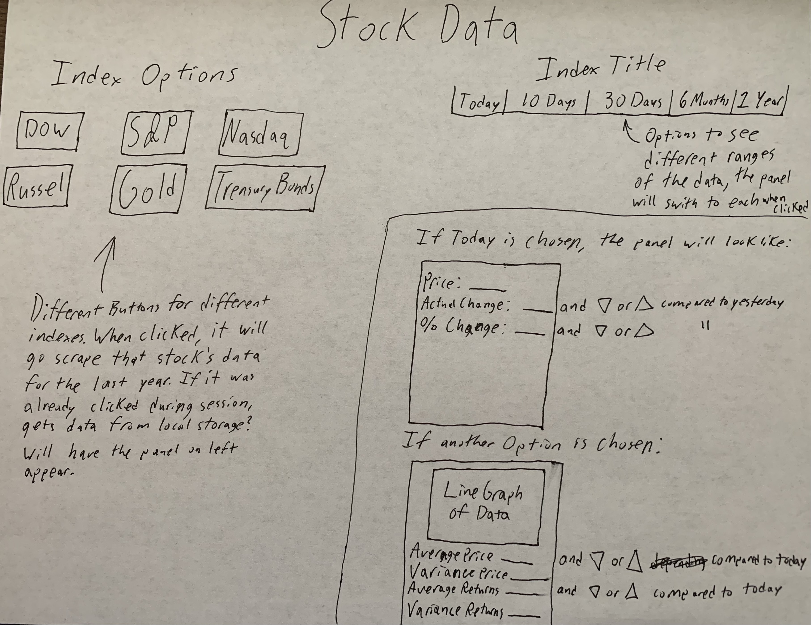

I received feedback that the problem from last week was the formatting of the parameters
of the function. After this was fixed, it was easy to get the functionality of switching the turn working.
I then also used the same function to set the symbol on each square. I used hooks to accomplish both of these
things. I also added some CSS formatting to make the game look better. I also implemented the function that
would calculate if there is a winner. After I did this though, marking more squares was possible.
I tried to prevent this by using a varibale to denote the end of the game, but the page kept getting stuck
in an infinite loop. I discovered this was because I was using a normal variable and not a hook to keep track
of this. After I used a hook, the issue was solved. I also added a button to start over.
Calculator Progress Report:
I used hooks to help pass values of numbers and operations throughout my program.
I had the most difficulty with accounting for invalid input. I had to make sure that each input from
the user was valid. For numbers I accomplished this by using the parseFloat function, which takes a string
and returns either a number or NaN. I would then test to see if the result was NaN or not. For determining
if the operation was valid, I tested to see if the input was an element of a list of operations I had.
In addition to testing if types were valid, I also had to test if the proposed operation would produce a number.
Therefore, for division, exponentiation, and modulus, I had to test if the output was indeed a number before
changing the answer. I also tried something to see if it worked and it does. I learned that you can pass an id
to a react componenent, and then assign that id to the html tag that is being returned. That way, you can have
the same components that offer the same functionality, but they can be styled differently. I did this with the entry
places for the numbers and the entry place for the operation. For both the calculator and tic-tac-toe, I did
not follow a specific tutorial. I did use W3Schools as a reference for determing which html tags had which
attributes, and Dr. Bart's video for help with functionality.
TA Trainer:
I originally planned on doing another tutorial so I could get more comfortable with react,
but when Dr. Bart released his TA Trainer video, I decided that the video would be more valuable to me, as
if I learn React from Dr. Bart's perspective, it would be easier for me to follow along in class in the future.
Not only did I watch the video, I created my own react app to duplicate his work. I put it on GitHub and
my multiple commits over the course of many hours can be observed. I adapted some of the techniques he used to
accomplish the functionality of my other applications, including getting input from the user, which was something I had
trouble with before watching.
Deploying React App Progress Report:
Last week, I could not get my tic-tac-toe app to deploy. I really messed up the
repository and ended up pushing one repository into another. I went to office hours with a TA on Wednesday, and we tried to get it
working with the TA-Trainer I was working on, but it would not work. Later in the day, it started working, for
reasons unknown with a generic new applicaiton. However, it would not work with my previous tic-tac-toe project
and the original TA-Trainer that was not yet complete, so I made new apps called tictactoe2 and tatrainer2
to get the pages working. That is why the initial commit is much larger. I am now confident tha I can deploy
react apps to github pages. I also learned how to change the icons and title on the tab.
Change Log
09/17-09/21: I got TicTacToe working. On the 22nd, I added some additional features to make it
better. The link to the game is here.
The link to the source code is here.
09/22: I watched Dr. Bart's video and replicated the program. The link to the TA-Trainer is
here.
The link to the source code is here.
09/22: I got React Apps to deploy.
09/22-09/23: I made a simple calculator. In addition to my planned operations, it also does modulus.
The link to the calculator is here.
The link to the source code is here.
I updated my website I have been using for my portfolio (the one you see right now).
TO DO
I will correct any mistakes/improve on the feedback either the TAs or Dr. Bart offers.
I plan on making a web application that will scrape stock data and display it. Below is
a drawing of what I imagine the website will be, along with the functionality.
